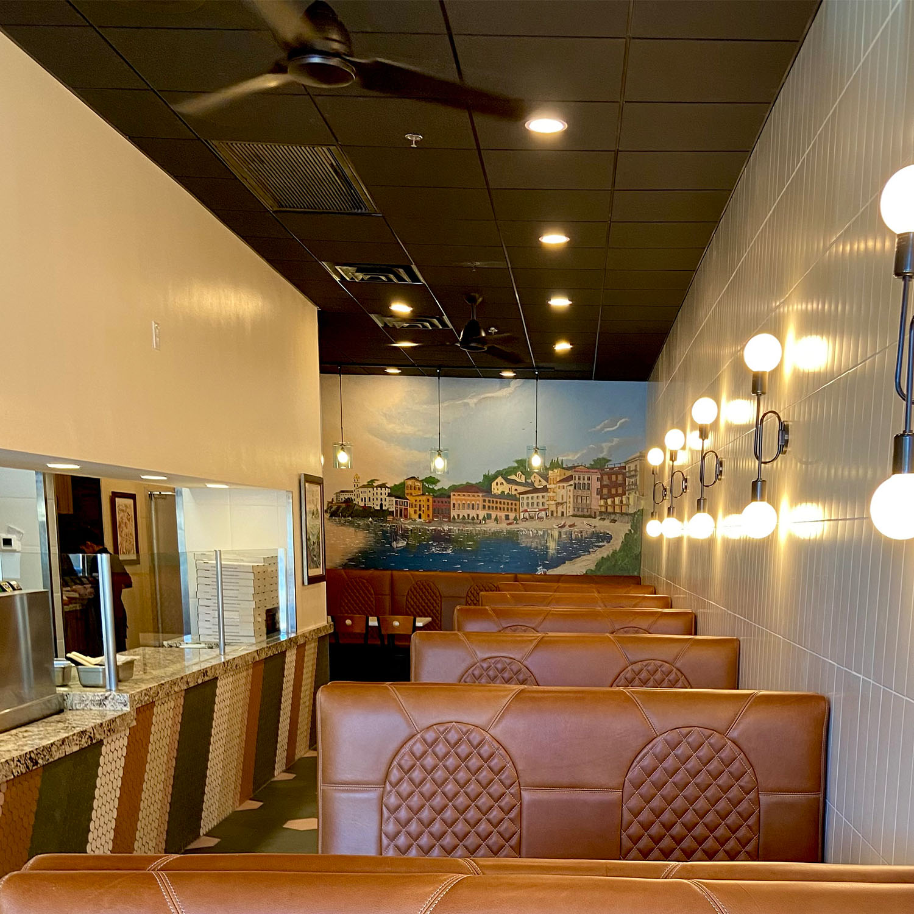

| Company | Country |
|---|
Welcome to the epicenter of all of your photographic needs! If you are needing a spotlight, the limelight, or any kind of light on your place of business, this is the place to be! The goal of Webflick is to provide small business owners a microphone so to speak in order to get some attention! The photos provided by Webflick will help convey the messages needed in order to reach the people of the city! example: https://chilemedia.com/food-photography/

Webflick can help show off a different side to your restaraunt! Showing the public what you provide to the community is the goal when teaming up with Webflick! example: https://davidloistudios.com/fine-dining-restaurant-photography-services-in-san-antonio-tx/
